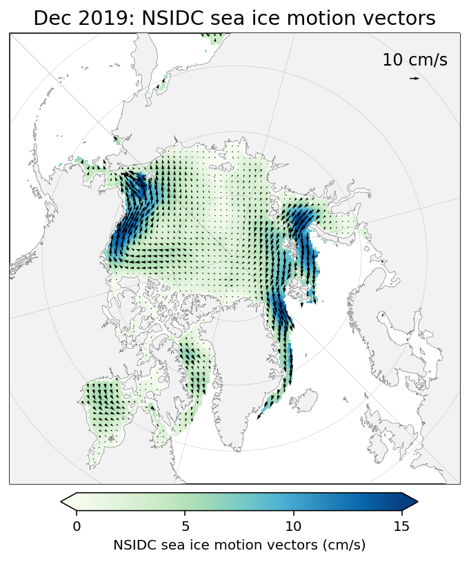

Sea ice drift¶
This notebook plots NSIDC sea ice drift vectors.
Input:
NETCDF4 file from the jupyter book’s google bucket
Output:
Plots of sea ice drift
Tip
Try running this notebook in Google Colab! Toggle over the rocketship icon at the top of the page and click Colab to open a new window and run the notebook.
To run a single cell, type Shift+Enter. To run the whole notebook, under Runtime click Run all. Note that you will have to run the notebook from the very beginning and load all the Google Colab dependencies for the code to work.
Import notebook dependencies¶
import os
import numpy as np
import xarray as xr
import pandas as pd
import matplotlib.pyplot as plt
import cartopy.crs as ccrs
import cartopy.feature as cfeature
import pyproj
from datetime import date
#axes needed for plotting
from matplotlib.axes import Axes
from cartopy.mpl.geoaxes import GeoAxes
GeoAxes._pcolormesh_patched = Axes.pcolormesh
# Ignore warnings in the notebook to improve display
# You might want to remove this when debugging/writing new code
import warnings
warnings.filterwarnings('ignore')
#increase resolution for notebook outputs
%matplotlib inline
%config InlineBackend.figure_format = 'retina'
#import utils function
if 'utils.py' not in os.listdir(os.getcwd()):
!gsutil cp gs://icesat2-book-data/utils.py ./
import utils
Load data into notebook¶
Copy file from the book’s google bucket and load into an xarray dataset.
!gsutil -m cp gs://icesat2-book-data/icesat2-book-winter-data.nc ./
dataset = xr.open_dataset('icesat2-book-winter-data.nc')
Copying gs://icesat2-book-data/icesat2-book-winter-data.nc...
/ [0/1 files][ 0.0 B/157.1 MiB] 0% Done
-
- [0/1 files][ 14.2 MiB/157.1 MiB] 9% Done
\
|
| [0/1 files][ 40.7 MiB/157.1 MiB] 25% Done
/
/ [0/1 files][ 71.4 MiB/157.1 MiB] 45% Done
-
\
\ [0/1 files][102.3 MiB/157.1 MiB] 65% Done
|
/
/ [0/1 files][119.3 MiB/157.1 MiB] 75% Done
-
- [0/1 files][149.0 MiB/157.1 MiB] 94% Done
\
\ [1/1 files][157.1 MiB/157.1 MiB] 100% Done
Operation completed over 1 objects/157.1 MiB.
Plot drift data¶
Define plotting function¶
def plotDriftsOneMonth(dataset, month, minval = 0, maxval = 15, cbarTicks = None, cmap = 'GnBu', res = 4, scale_vec = 100, vector_val = 10):
"""Plots map of the arctic on North Pole Stereo projection with one month of drift magnitude and direction vectors data overlayed
Args:
dataset (xr Dataset): dataset from google bucket
month (str): month and year of interest, i.e. 'Dec 2019' (does not need to be in any particular format)
minval (int): minimum drift value (default to 0 cm)
minval (int): maximum drift value (default to 15 cm)
cbarTicks (list or np array of length 2): ticks to use on colorbar (default to [0,5,10,15])
cmap (str, optional): color map (default to GnBu)
res (int): resolution to display vectors (default to 4)
scale_vec (int): scaling value for displaying vectors (default to 100)
vector_val (int): value of vector to display in quiver key (default to 10 cm)
Returns:
Figure displayed in notebook
"""
#define projection and transform
proj = ccrs.NorthPolarStereo(central_longitude = -45)
transform = ccrs.PlateCarree()
#initialize the figure and axes
fig = plt.figure(figsize=(6, 6))
ax = plt.axes(projection = proj)
#define arguments if not inputted
cbarTicks = np.arange(0, 15 + 5, 5) if cbarTicks is None else cbarTicks
#plot vector magnitudes
uvelT = dataset.sel(time = month)['drifts_uT'].values[0]
vvelT = dataset.sel(time = month)['drifts_vT'].values[0]
vectorMag = np.sqrt(uvelT**2 + vvelT**2)
magPlot = ax.pcolormesh(dataset.longitude.values, dataset.latitude.values, vectorMag, vmin = minval, vmax = maxval,
transform = transform, zorder = 2, cmap = cmap)
#plot vectors
#Following https://github.com/SciTools/cartopy/issues/1179 we need to rescale the
u_src_crs = uvelT / np.cos(dataset.latitude.values / 180 * np.pi)
v_src_crs = vvelT
magn_src_crs = np.sqrt(u_src_crs**2 + v_src_crs**2)
var_u_scaled = u_src_crs * vectorMag / magn_src_crs
var_v_scaled = v_src_crs * vectorMag / magn_src_crs
Q = ax.quiver(dataset.longitude.values[::res, ::res], dataset.latitude.values[::res, ::res], var_u_scaled[::res, ::res],
var_v_scaled[::res, ::res], transform = transform, units = 'inches', scale = scale_vec, zorder = 5)
qk = plt.quiverkey(Q, 0.9, 0.9, vector_val, str(vector_val) + ' ' + dataset['drifts_uT'].attrs['units'], coordinates = 'axes', zorder = 11, fontproperties = {'size': 12})
#add features to the map
ax.coastlines(linewidth = 0.15, color = 'black', zorder = 10) #add coastlines
ax.add_feature(cfeature.LAND, color ='0.95', zorder = 5) #add land
#ax.add_feature(cfeature.LAKES, color = 'grey', zorder = 5) #add lakes
ax.gridlines(draw_labels = False, linewidth = 0.25, color = 'gray', alpha = 0.7, linestyle = '--', zorder = 6) #add gridlines
ax.set_extent([-179, 179, 55, 90], crs = transform) #zoom in so map only displays the Arctic
ax.set_title(month + ": " + dataset['drifts_uT'].attrs['long_name'], fontweight = 'medium', fontsize = 'x-large')
#add colorbar
cax = fig.add_axes([0.22, 0.08, 0.6, 0.03])
cb = fig.colorbar(magPlot, cax = cax, extend = 'both',orientation = 'horizontal')
cb.set_label(dataset['drifts_uT'].attrs['long_name'] + ' (' + dataset['drifts_uT'].attrs['units'] + ')', size = 10)
cb.set_ticks(cbarTicks)
#display figure in notebook
plt.show()
Call plotting function¶
plotDriftsOneMonth(dataset, month = 'Dec 2019')
